Travel adaptors
Travel adaptors are notorious for having considerable safety problems - this is generally because they're built as
cheaply as possible, while also often trying to be compatible with many types of plug in order to be sold in multiple
countries.
Additionally, they don't conform to any sort of standard, which means they may be more unreliable, or without
certain safety features found in normal plugs or sockets.
The dangers of unsafe travel adaptors
Because of this, they can be quite dangerous, depending on the specific model. Adaptors that try to accept many types of plug have looser connections, due to the larger holes and wider contacts needed, which could then pose a fire risk; it's also common for them to accept European earthed plugs without providing an earth connection.
Another common problem is the lack of sleeving on pins, especially on ones meant to be used in Europe, as well as a lack of safety shutters.
EU/US to US 2-prong adaptor
This is a typical example of a dangeous adaptor, in this case a non-earthed version: it converts a European or
American plug into a 2-prong non-polarised American one.
First of all, it's possible to connect an earthed plug into it (even an American 3-prong one, due to its shape);
however, that's probably the least problematic of its issues; the socket contacts don't have any sort of shutter
mechanism, while also having a very large opening, which means it's easy to touch the contacts inside even with
just a finger.
The socket also makes a very poor connection with almost any plug that's used with it, and the contacts aren't designed to be pushed back together after a plug is removed, which can make the connection even worse over time and possibly even cause overheating. All of this puts into question its claimed rating of 10A 250V.
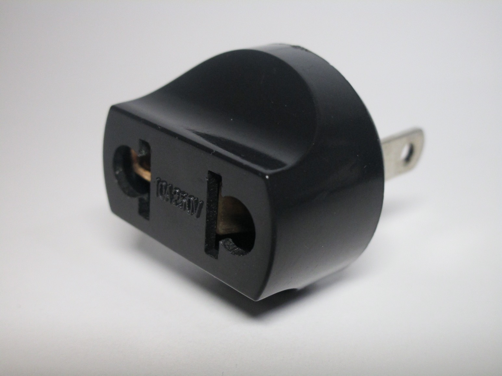 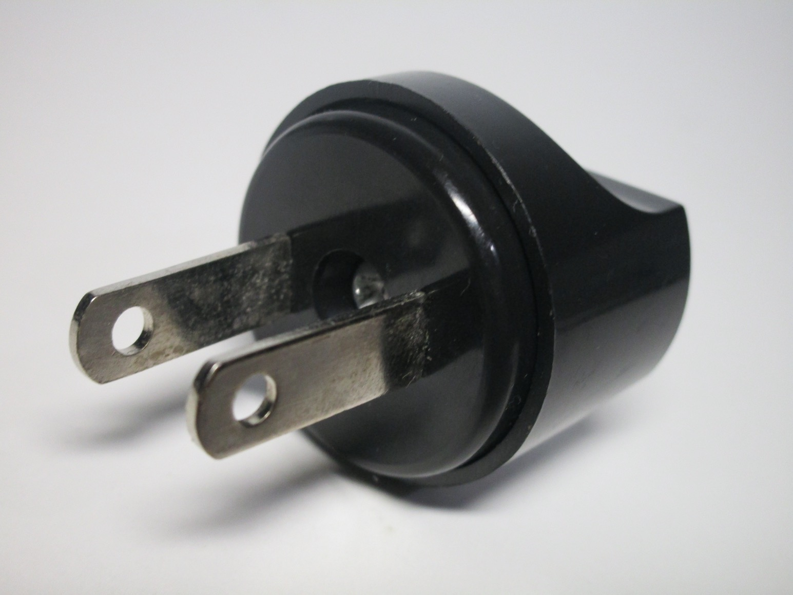{kind=link}
{kind=link}
The infamous "deathdaptor"
This adaptor is infamous online for being essentially a collection of everything that you could possibly get wrong in designing a travel adaptor - thus earning its nickname of "the deathdaptor".
First of all, the holes on it are very large in order to accomodate as many standards as possible, and the contacts are extremely loose, barely holding a plug in, which makes for a very poor and potentially unsafe connection. Additionally, the adaptor doesn't feature any sort of safety shutters, which, combined with its small shape, means it's possible for the user to insert a plug in a danerous way, such as with the earth pin in the live contacts.
In fact, the holes aren't even designed properly - I tried connecting an Italian 10A plug, as it clearly has holes meant for the earth pin on them, and it just got stuck inside, likely to a design or manufacturing defect.
Finally, the pins on this specific adaptor (which are for use in Italy) don't feature any sort of sleeving, despite sleeved plugs having been mandatory for decades. So, if there was any doubt about the questionable nature of these adaptoes, this confirms that they simply aren't made with any sort of safety regulation in mind.
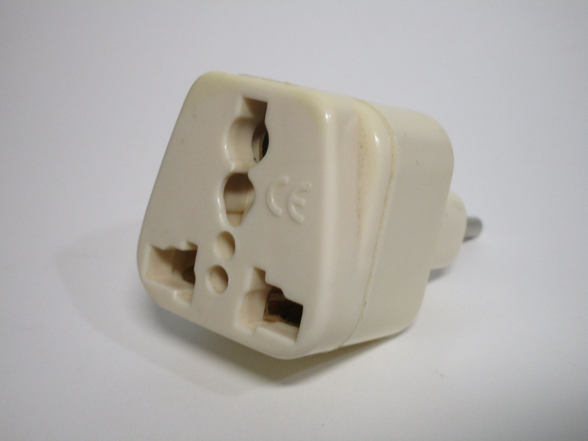 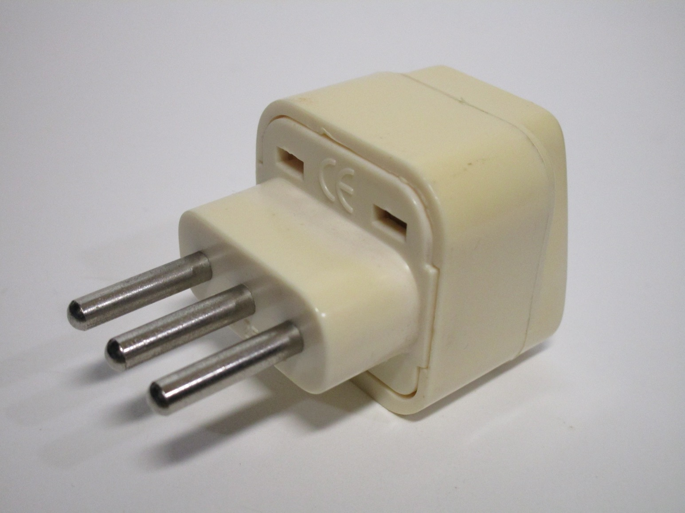{kind=link}
{kind=link}
US (non-polarised) to EU adaptor
This style of travel adaptor is actually not all that bad, all things considered; its main flaw is the lack of sleeving on the pins, which is quite common with adaptors of this style. Aside from that, however, it's not as horrible as the ones shown earlier, especially since the socket part only accepts American plugs, which helps form a decent connection.
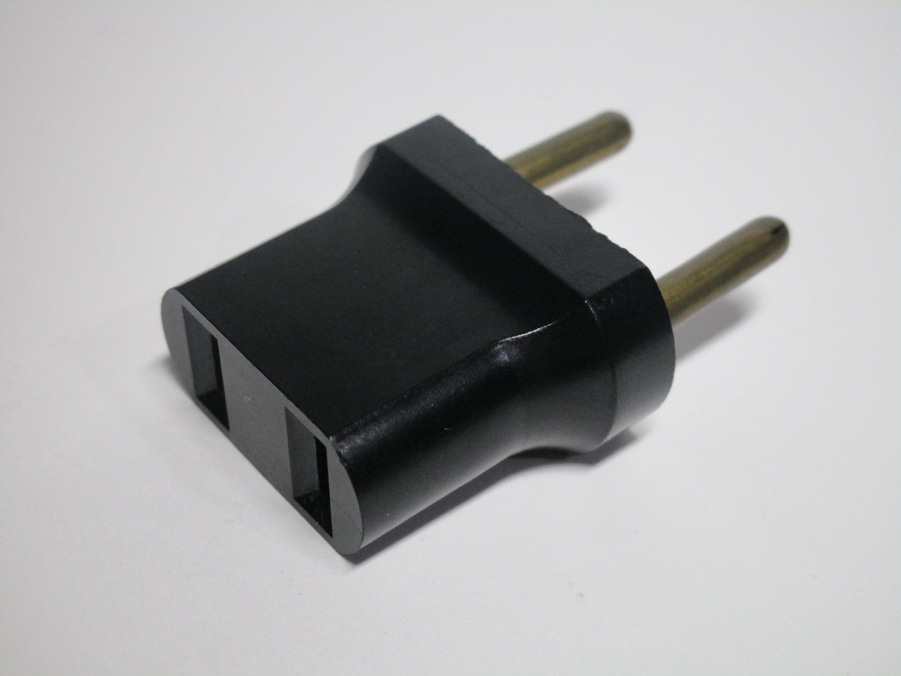 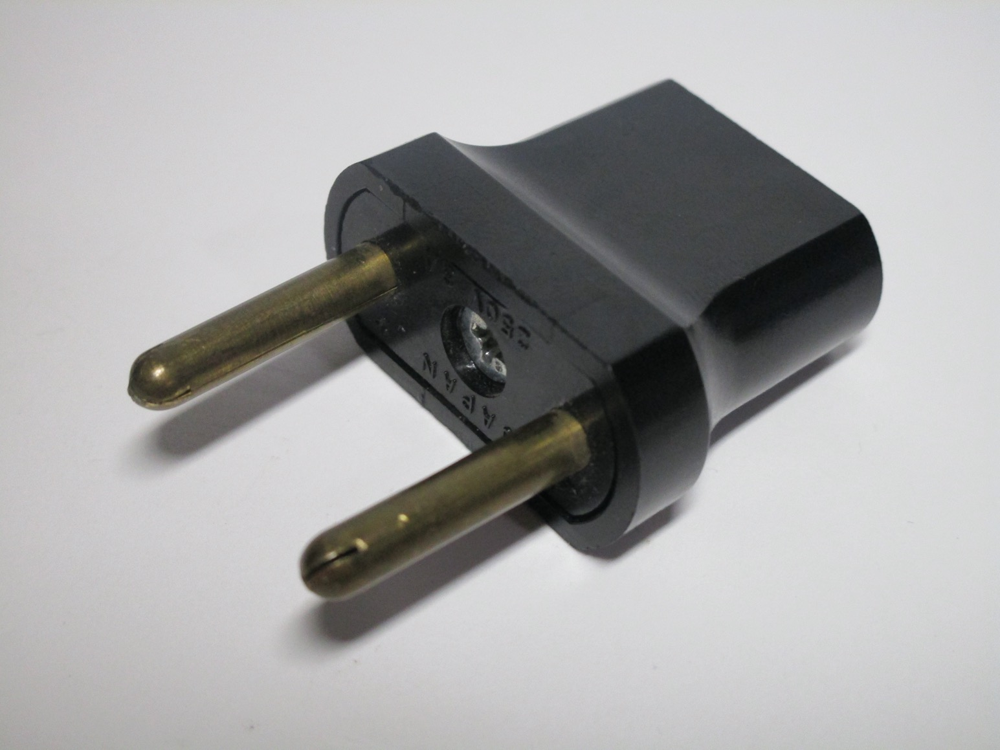{kind=link}
{kind=link}
EU/US 2-pin to UK adaptor
This adaptor gets very close to being decent, but misses the mark due to its lack of shutters and very loose
connection formed by its contacts, which are compatible with both American and European plugs.
Aside from that, it's constructed well, and is fitted with a fuse - a mandatory feature on UK plugs.
 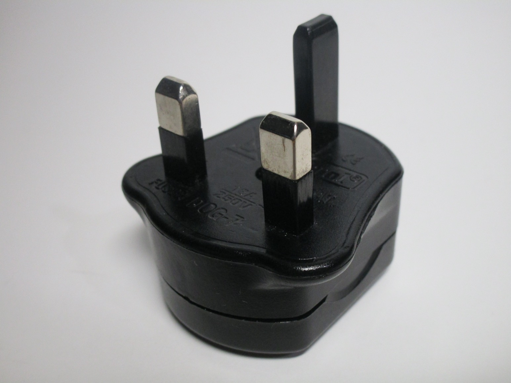
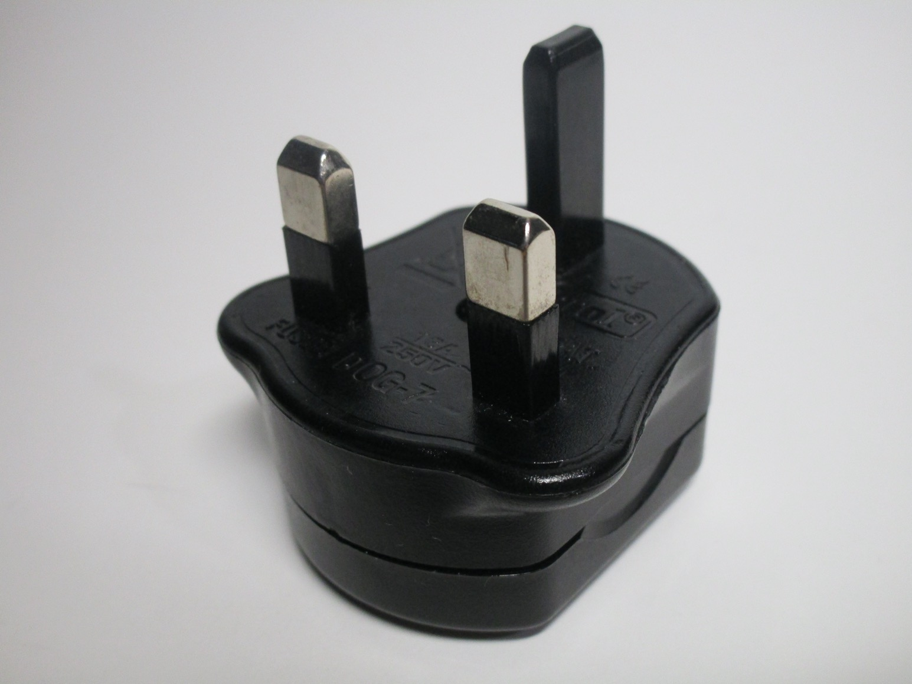
{kind=link}
Finding good travel adaptors
Searching for a travel adaptor that isn't a safety hazard can be quite a daunting task, as most of the ones you'll find on online stores are of the cheap and dangerous variety. However, not all hope is lost: with a bit of careful research, it is in fact possible to buy a decent adaptor.
Generally, the key is to find one that only has one type of plug and one type of socket; those cheap ones that have multiple plugs built into them are just not worth bothering with, for example. Certain adaptors may offer removable bits with different plug types which can be inserted depending on your needs; these can be fine, but do make sure that the plug modules all conform to the standard of the nation they're meant to be used in.
If using a device with a Schuko plug, such as a laptop, make sure that the adaptor features earth clips or an earth pin in order to provide an earth connection to the device (such as in the ones shown below), as these plugs will fit even in non-earthed sockets.
Also, make sure that any adaptor meant to be used in the UK has a fuse - this may be in a removable piece on the back, or hidden inside and accessible by removing some screws. This is an extremely important thing to have, as in the UK most circuits are protected by a 32A breaker, so a fuse is needed to protect the cord of the appliance that's plugged in.
Schuko to Australian adaptor
This is a good example of how to make a travel adaptor correctly: it converts a European Schuko plug to be used with Australian power sockets, and nothing else. The adaptor features sleeved pins, a mandatory feature on Australian plugs, and the recessed socket and earth side contacts necessary to use with most European earthed appliances.
The only downside to it is the lack of safety shutters, however that's (unfortunately) common in standard power sockets in parts of Europe, so that's not too out of the ordinary.
 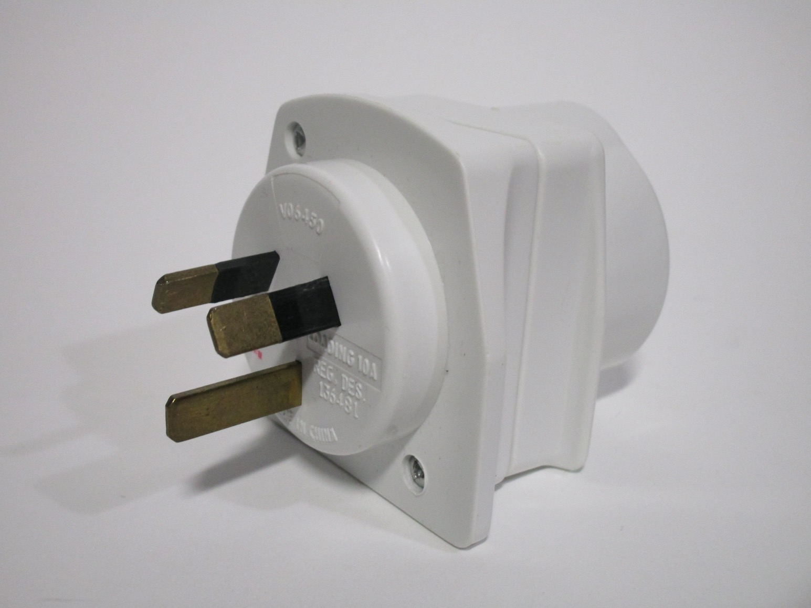
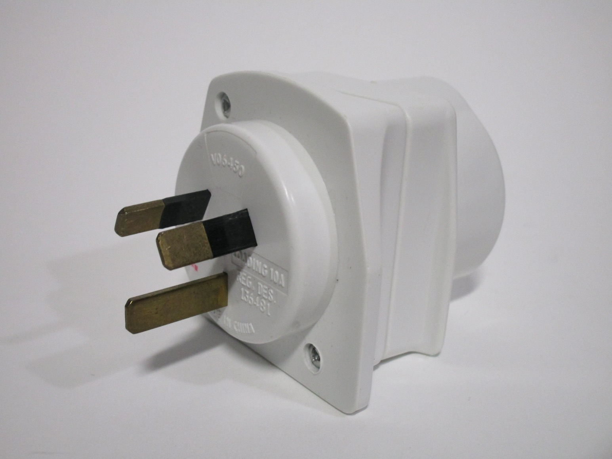
{kind=link}
French to type H (Israel) adaptor
This other adaptor also converts just one type of plug - in this case, oddly, using a French socket - into another one, which once again makes it extremely safe to use. It also has some plastic tabs on the side which help when removing it from a socket.
As it uses a French-style socket, it does have shutters, as that's mandatory in France and Belgium. The plug part doesn't have sleeved pins, but that's purely a fault of the Israeli plug standard, which doesn't make them mandatory. So, in practice, this adaptor is as safe as it could possibly be.
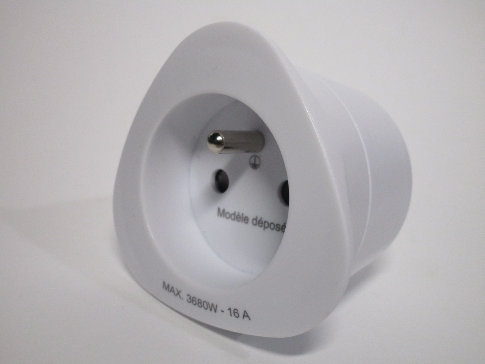 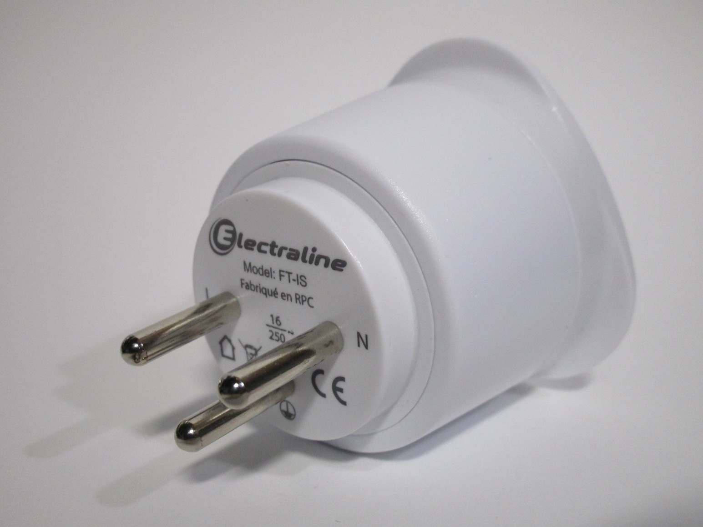{kind=link}
{kind=link}